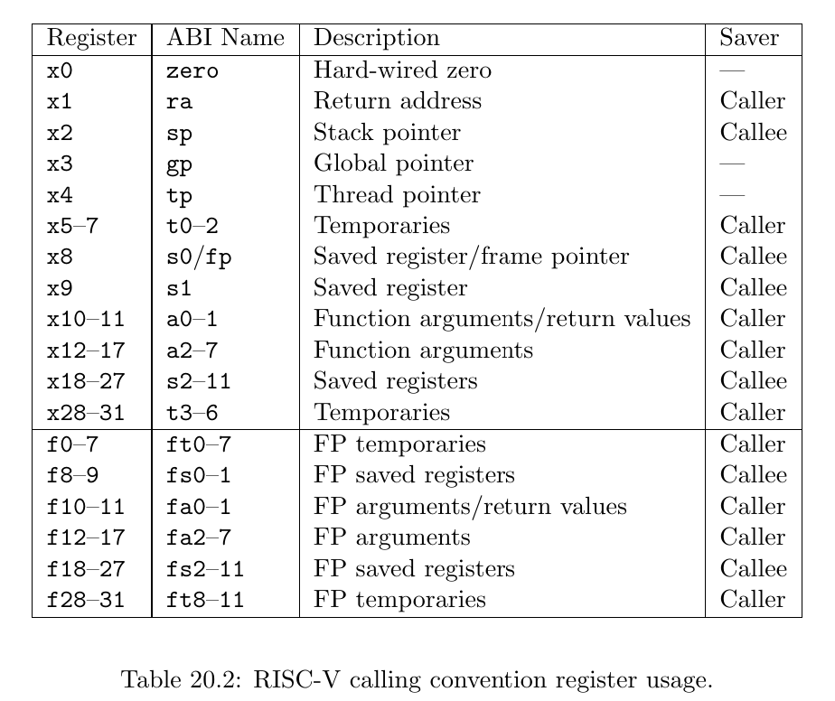
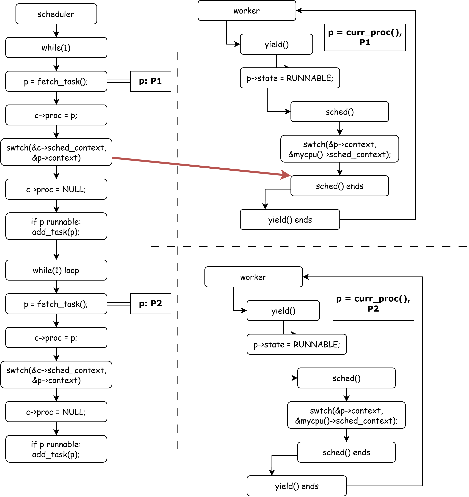

Context Switch¶
实验目的¶
- 了解进程管理
- 了解上下文切换
- 掌握XV6进行多核进程切换的流程
xv6-lab3 代码分支
https://github.com/yuk1i/SUSTech-OS-2025/tree/xv6-lab3
使用命令 git clone https://github.com/yuk1i/SUSTech-OS-2025 -b xv6-lab3 xv6lab3 下载 xv6-lab3 代码。
使用 make runsmp 使用多核心（4个） 运行本次 Lab 的内核，你应该会看到：
Boot another cpus.
...
System has 4 cpus online
...
kthread: all threads exited, count 6288388
[INFO 1,1] init: kthread: init ends!
[PANIC 1,1] os/proc.c:225: init process exited
[PANIC 0,-1] os/trap.c:41: other CPU has panicked
[PANIC 2,-1] os/trap.c:41: other CPU has panicked
[PANIC 3,-1] os/trap.c:41: other CPU has panicked
上下文切换 (Context Switch) 是操作系统中的一个重要概念，本章我们将集中于 Context Switch 在技术上的实现，和 xv6 中调度器 (scheduler) 的设计。
实验场景¶
本次实验中，我们将在拥有4个核的 riscv CPU 上运行我们的XV6操作系统。
当操作系统启动后，我们会创建并运行 init 进程。init进程会创建8个内核线程 worker 放入调度队列。接着，四个核会轮流运行这8个 worker 直到exit。而父进程 init 会在 wait 完8个子进程后运行结束。
本次的实验场景就是对于以上9个线程的调度和切换过程。以下是 init 和 worker 执行内容。在之后的章节中我们会逐步解释进程切换所涉及到的知识点和具体流程。
init()¶
code: nommu_init.c
init 进程会执行 init 方法，它会创建 8 个内核线程，均执行 worker 方法。这 8 个内核线程会对共享变量 count 进行累加，并且每累加 1000 次调用 yield 一次。
init 方法会调用 wait 等待所有创建的内核线程退出，并最终打印共享变量 count 的值。
#define NTHREAD 8
volatile uint64 count = 0;
void worker(uint64 id) {
for (int i = 0; i < 1000000; i++) {
count++;
if (i % 1000 == 0) {
infof("thread %d: count %d, yielding", id, count);
yield();
}
}
exit(id + 114514);
}
void init(uint64) {
infof("kthread: init starts!");
int pids[NTHREAD];
for (int i = 0; i < NTHREAD; i++) {
pids[i] = create_kthread(worker, i);
}
int retcode;
for (int i = 0; i < NTHREAD; i++) {
int pid = wait(pids[i], &retcode);
infof("thread %d exited with code %d, expected %d", pid, retcode, i + 114514);
}
printf("kthread: all threads exited, count %d\n", count);
infof("kthread: init ends!");
exit(0);
}
什么是 Context¶
在操作系统中，Context (上下文) 是指在某一时刻程序运行所需的所有状态信息的集合。在 xv6 系统中，我们规定每个 Process 是一个独立的可被调度的实体，也就是说，每个 Process 拥有自己的 Context。
理解 Context 的重要性在于：当操作系统需要切换执行不同的进程时，必须保存当前进程的 Context，并加载要切换到的进程的 Context。这样才能确保进程在下次获得 CPU 时能够从之前的状态继续执行。这个保存和恢复 Context 的过程就是 Context Switch 的核心内容。
想象一下你正在读一本书，当你需要暂时去做别的事情时，你会用书签标记当前阅读的位置。这个书签就相当于保存了你的"阅读上下文"。当你回来继续读书时，通过书签就能知道从哪里继续读起。操作系统中的 Context 作用与此类似，只是需要保存和恢复的信息要复杂得多。
为什么要 Context Switch¶
从调度 (Scheduling) 的角度来看，Context Switch 是实现多任务处理和资源复用的关键机制：
-
CPU 资源的时分复用
当系统中有多个就绪进程需要运行时，操作系统需要让它们轮流使用 CPU。即使操作系统只有单个CPU，通过时分复用轮流运行不同的进程，可以实现所有进程好像在同时运行的效果。调度器会根据调度策略（如 Round Robin、Priority Scheduling 等）决定在某个时刻应该运行哪个进程。为了切换到被调度的进程，就必须执行 Context Switch。
-
提高系统吞吐量
当一个进程因为 I/O 操作而阻塞时，CPU 会闲置。通过 Context Switch，调度器可以切换到其他就绪进程，这样 CPU 就能在等待 I/O 的同时继续执行其他任务，最终提高了整个系统的资源利用率和吞吐量。
-
响应交互式任务
用户交互程序需要及时响应。通过 Context Switch，调度器可以暂停当前运行的批处理任务，迅速切换到需要立即响应的交互式任务，实现更好的用户体验。
什么时候进行 Context Switch¶
通常 Context Switch 发生在以下几种情况：
-
时间片到期时（Time Slice Expiration）
在采用时间片轮转调度算法时，当进程用完分配的时间片，系统的时钟中断触发，操作系统强制进行 Context Switch，切换到其他就绪进程。
-
进程进入阻塞状态时（Process Blocking）
进程发起系统调用等待 I/O 操作，进程等待某个事件（如信号量），进程申请资源但无法立即获得。
此时进程主动放弃 CPU，调度器选择其他就绪进程运行。
-
进程主动让出 CPU 时（Voluntary Yield）
进程调用
yield系统调用，主动放弃剩余的时间片，通常用于进程感知到自己短期内无事可做时。
xv6 Process¶
Process, Thread 和 Kernel Thread
什么是进程 (Process)：进程是程序的一个实例，每个进程有自己独立的地址空间、内存、文件描述符等资源。 而线程 (Thread) 是进程内的执行单元，是 CPU 调度的基本单位，线程有自己的栈空间和寄存器状态，同一进程的线程共享进程的地址空间和大部分资源。通常来说，一个进程内可以有多个线程。
在我们的实验课上，我们使用的 xv6 为了简化实现，做出了如下规定：
- 每个进程有且只有一个线程。所以，在 xv6 中，进程即是 CPU 调度的基本单位。
- 每一个用户进程拥有两个执行环境：处于用户模式（U mode）的用户环境，和处于内核（S mode）的内核环境，我们将后者称为内核线程（Kernel Thread）。
在本次 Lab 中，我们还尚未进入用户模式，所以每个进程仅有内核线程。我们会在几周后的实验课介绍用户空间。
相关代码：
os/proc.h,os/sched.c,os/smp.c
在 xv6 中，Process Control Block (PCB) 被定义如下：
enum procstate { UNUSED, USED, SLEEPING, RUNNABLE, RUNNING, ZOMBIE };
struct proc {
spinlock_t lock;
// p->lock must be held when accessing to these fields:
enum procstate state; // Process state
int pid; // Process ID
uint64 exit_code;
void *sleep_chan;
int killed;
struct proc *parent; // Parent process
uint64 __kva kstack; // Virtual address of kernel stack
struct context context; // swtch() here to run process
// Userspace: User Memory Management, not covered in today's lab
struct mm *mm;
struct vma *vma_brk;
struct trapframe *__kva trapframe; // data page for trampoline.S
};
每个 Process 有自己的 pid, 进程状态、parent 指针、内核栈、和内核 Context。
对于有用户态（本次实验代码中还没有）的 Process，PCB 中还有负责管理内存的 struct mm，和保存用户模式下 Trap 触发时数据的 Trapframe。
除此之外，每个进程都有一个自旋锁 spinlock_t，尽管我们目前理论课还没有接触到锁和并发的相关知识，但是我们在 xv6 中规定：访问 struct proc 的所有成员时，都需要在持有 p->lock 的情况下进行。
偷跑：什么是锁
锁 (lock) 是一种控制并发访问的基本工具。
我们规定：在我们持有 (holding) 一把自旋锁时：1. 该 CPU 不能被中断，2. 其他 CPU 不能同时持有这一把锁。
我们使用 acquire 和 release 原语表示 上锁 和 解锁 的动作。
如果在 acquire 时抢不到锁，那么该 CPU 会进行原地空转直到抢到锁。
struct cpu¶
在 xv6 中，我们使用 struct cpu 描述每个 CPU 的状态，并且可以使用 mycpu() 方法获取当前 cpu 对象。
struct cpu {
int mhart_id; // mhartid for this cpu, passed by OpenSBI
struct proc *proc; // current process
struct context sched_context; // scheduler context, swtch() here to run scheduler
int inkernel_trap; // whether we are in a kernel trap context
int noff; // how many push-off
int interrupt_on; // Is the interrupt Enabled before the first push-off?
uint64 sched_kstack_top; // top of per-cpu sheduler kernel stack
int cpuid; // for debug purpose
};
Process 初始化¶
为了简化实现，xv6 限制了系统中进程数量的最大值为一个固定值 512，并使用一个指针数组来索引所有进程。
在系统启动时，xv6 会执行 proc_init 函数来初始化所有进程资源，它会先初始化 Process 模块所需要的自旋锁，以及 struct proc 的分配池 proc_allocator。随后，它会初始化 512 个进程，每个进程从 proc_allocator 分配 PCB 结构体 struct proc*，进行 memset 初始化，以及分配一个内核栈 kstack。
kalloc
kalloc.c 模块主要完成以下事情：
- 分配、释放一个 4KiB 页面：
kallocpage，kfreepage。 - 分配、释放一个固定大小的对象：
allocator_init,kalloc,kfree。
struct proc *pool[NPROC];
// initialize the proc table at boot time.
void proc_init() {
// we only init once.
static int proc_inited = 0;
assert(proc_inited == 0);
proc_inited = 1;
spinlock_init(&pid_lock, "pid");
spinlock_init(&wait_lock, "wait");
allocator_init(&proc_allocator, "proc", sizeof(struct proc), NPROC);
struct proc *p;
for (int i = 0; i < NPROC; i++) {
p = kalloc(&proc_allocator);
memset(p, 0, sizeof(*p));
spinlock_init(&p->lock, "proc");
p->index = i;
p->state = UNUSED;
p->kstack = (uint64)kallocpage();
assert(p->kstack);
pool[i] = p;
}
sched_init();
}
在我们需要一个 PCB 时，allocproc 会在 pool 中寻找一个未被分配的进程，进行最终的初始化并返回。我们会在后续讲解 xv6 是如何初始化进程的 Context。
// Look in the process table for an UNUSED proc.
// If found, initialize state required to run in the kernel.
// If there are no free procs, or a memory allocation fails, return 0.
struct proc *allocproc() {
struct proc *p;
// find an UNUSED proc
for (int i = 0; i < NPROC; i++) {
p = pool[i];
acquire(&p->lock);
if (p->state == UNUSED) {
goto found;
}
release(&p->lock);
}
return 0;
found:
// initialize a proc
tracef("init proc %p", p);
p->pid = allocpid();
p->state = USED;
p->killed = 0;
p->sleep_chan = NULL;
p->parent = NULL;
p->exit_code = 0;
memset(&p->context, 0, sizeof(p->context));
memset((void *)p->kstack, 0, PGSIZE);
if (!init_proc)
init_proc = p;
assert(holding(&p->lock));
return p;
}
xv6 Context Switch¶
对于一个程序而言，它所能看到和修改所有状态，即它的所有寄存器和内存空间。因为在内核空间下，所有内核线程所看到的内存空间是同一个（而对于用户进程而言，不同的程序有不同的内存空间）。所以，对于内核进程，我们只需要保存它的寄存器状态即可。因此，在 xv6 中，我们定义一个进程的 内核 Context 为如下结构。
// Saved registers for kernel context switches.
struct context {
uint64 ra;
uint64 sp;
// callee-saved
uint64 s0;
uint64 s1;
uint64 s2;
uint64 s3;
uint64 s4;
uint64 s5;
uint64 s6;
uint64 s7;
uint64 s8;
uint64 s9;
uint64 s10;
uint64 s11;
};
在 switch.S 文件中，我们定义"函数" swtch，该函数的原型为 void swtch(struct context *old, struct context *new)。
# Context switch
# void swtch(struct context *old, struct context *new);
# Save current registers in old. Load from new.
.globl swtch
swtch:
sd ra, 0(a0)
sd sp, 8(a0)
sd s0, 16(a0)
sd s1, 24(a0)
sd s2, 32(a0)
sd s3, 40(a0)
sd s4, 48(a0)
sd s5, 56(a0)
sd s6, 64(a0)
sd s7, 72(a0)
sd s8, 80(a0)
sd s9, 88(a0)
sd s10, 96(a0)
sd s11, 104(a0)
ld ra, 0(a1)
ld sp, 8(a1)
ld s0, 16(a1)
ld s1, 24(a1)
ld s2, 32(a1)
ld s3, 40(a1)
ld s4, 48(a1)
ld s5, 56(a1)
ld s6, 64(a1)
ld s7, 72(a1)
ld s8, 80(a1)
ld s9, 88(a1)
ld s10, 96(a1)
ld s11, 104(a1)
ret
当我们需要进行上下文切换时，我们需要调用 swtch 函数，并给出两个 struct context* 指针，分别表示，当前的 Context 应该被保存到哪里 (old)，和之后应该从哪里继续执行 (new)。
由于我们是 C 语言中尝试去调用一个函数 (swtch)，编译器会按照 RISC-V 的 Calling Convention 构造环境，例如返回地址会被写入在 ra 寄存器中，有一些寄存器会被保存在栈上。
根据 RISC-V 的 Calling Convention，寄存器分为两种：Caller-saved 和 Callee-saved。对于 Caller-saved register，如果调用者想保证它们在函数调用前后不变，那么调用者需要自己进行保存，被调用者允许随意修改这些寄存器；对于 Callee-saved register，调用者可以假设它们在函数调用前后不变，如果被调用者想要使用这些寄存器，那么被调用者需要自己进行保存并恢复。并且，寄存器是在栈帧 (Stack Frame) 上保存的 (由编译器自动进行的)。
所以，swtch 函数只需要保存 sp, ra 和所有其他的 Callee-saved Register 到 old 结构体中，就可以记住原来调用者的程序执行状态。相反的，从 new 中恢复只需要设置这些寄存器即可。

下图展示了 P1 切换到 P2 的过程，P1 和 P2 有各自的 Stack，有各自的 Context 结构体。

P1 在执行 P1 函数时，会在函数开头 (prologue) 保存 P1 的调用者的返回地址，同时在栈上开辟局部变量。在 P1 调用 swtch 前，编译器在已经将所有 Caller-Saved Registers 保存在栈上，然后生成汇编 jal swtch，这一条汇编执行时会将 ra 设置为 P1 函数中 jal 的下一条指令，即我们常说的 pc+4。
在调用 swtch 时，a0 指向了 P1 的 struct context 结构体，swtch 使用 sd 指令保存 ra, sp 和 s0 - s11 寄存器。
之后，swtch 从 a1 加载即将恢复的 P2 的 Context，使用 ld 指令从 struct context 结构体中读取属于 P2 的 ra, sp 和 s0 - s11 寄存器。
在 CPU 执行到 ret 时，pc 被恢复为 ra 寄存器的值，此时开始执行上次 P2 调用 swtch 时保存的返回地址。
至此，成功完成了从 P1 到 P2 的切换。（注：P1 与 P2 不一定指代操作系统中的两个进程，而是任意的两个程序）
此外，swtch 方法是天生成对的：如果上次使用 swtch 离开了当前进程，那么下次返回时，必定是有其他进程调用了 swtch 回到了该进程。
Lab 练习 1¶
请你从汇编层面理解 swtch 函数。
假设你有如下两个 struct context 结构体，称为 ctx_a 和 ctx_b：
struct context ctx_a = {
.ra = 0x0,
.sp = 0x0,
};
struct context ctx_b = {
.ra = 0x802dead0,
.sp = 0x7fffB000,
};
假设你正在执行 swtch(&ctx_a, &ctx_b)，这一行方法调用所对应的汇编代码即周围的汇编代码如下所示：
// a0: address of ctx_a, a1: address of ctx_b
80205720: 05848593 addi a1,s1,88
80205724: 00002097 auipc ra,0x2
80205728: 1b4080e7 jalr 436(ra) # 802078d8 <swtch>
8020572c: 008ab503 ld a0,8(s5)
80205730: 24951263 bne a0,s1,80205974 <scheduler+0x304>
swtch 符号的地址为 802078d8，其汇编为：
swtch:
802078d8: 00153023 sd ra,0(a0)
802078dc: 00253423 sd sp,8(a0)
// store s0 - s11, ignored.
80207910: 0005b083 ld ra,0(a1)
80207914: 0085b103 ld sp,8(a1)
// restore s0 - s11, ignored.
80207948: 00008067 ret
此时，PC 寄存器指向 0x80205728，请你在表格中填写接下来每一步指令所修改的寄存器或内存状态。
xv6 scheduler¶
xv6 中，每个 CPU 都有一个自己的 scheduler。scheduler 方法从不返回。它是一个 while(1) 死循环，每次循环时，scheduler 都尝试获取一个 task，如果能执行它，那就 swtch 到该进程执行。
如果获取不到，则检查是否所有进程都退出了。如果是，则表明系统应该结束运行了；如果不是，则表示可能有的进程正在睡眠以等待资源，或者正在由其他 CPU 执行。我们使用 wfi (Wait For Interrupt) 指令等待下一次时钟中断，这一步等价于用 while(1); 使 CPU 空转一段时间。
如果我们成功获取到了一个进程，则对该进程上锁 acquire(&p->lock)，将其状态设置为 RUNNING，将当前 cpu 正在运行的进程设为该进程 (c->proc = p)。
mycpu 和 curr_proc
对于单处理器系统，单个 CPU 上同时只能有一个进程在运行，我们定义一个全局变量 struct proc* curr_proc 表示正在运行的进程(Current Process)。而对于多处理器系统，对于每个 CPU 都有一个 curr_proc，所以我们使用 struct cpu 结构体来表示每个 CPU 的信息。我们有一个全局数组 struct cpu cpus[4] 表示系统上的 4 个 CPU，并使用寄存器 tp 来表示当前运行在哪个 CPU 上，即 cpuid()，它直接读取并返回 tp 寄存器的值。
随后，使用 swtch 方法跳转到该进程保存的 Context 中，并保存当前 Context 到 cpu->sched_context 中。
对于 scheduler，我们做出如下规定：
- 进程只能通过 scheduler 来进行切换，即 A 进程会先切换到
scheduler再切换到 B 进程，而不能直接 A 进程切换到 B 进程。 - 切换到某进程
p时，离开 scheduler 前，当前 CPU 会持有p->lock这把锁。而持有锁暗含着当前 CPU 中断为关闭。 - 从进程
p切换回 scheduler 时，当前 CPU 会持有p->lock这一把锁。
// Scheduler never returns. It loops, doing:
// - choose a process to run.
// - swtch to start running that process.
// - eventually that process transfers control
// via swtch back to the scheduler.
void scheduler() {
struct proc *p;
struct cpu *c = mycpu();
// We only get here once.
// After each cpu boots, it calls scheduler().
// If this scheduler finds any possible process to run, it will switch to it.
// And the scheduler context is saved on "mycpu()->sched_context"
for (;;) {
// intr may be on here.
p = fetch_task();
if (p == NULL) {
// if we cannot find a process in the task_queue
// maybe some processes are SLEEPING and some are RUNNABLE
if (all_dead()) {
panic("[cpu %d] scheduler dead.", c->cpuid);
} else {
// nothing to run; stop running on this core until an interrupt.
intr_on();
asm volatile("wfi");
intr_off();
continue;
}
}
acquire(&p->lock);
assert(p->state == RUNNABLE);
infof("switch to proc %d(%d)", p->index, p->pid);
p->state = RUNNING;
c->proc = p;
swtch(&c->sched_context, &p->context);
// When we get back here, someone must have called swtch(..., &c->sched_context);
assert(c->proc == p);
assert(!intr_get()); // scheduler should never have intr_on()
assert(holding(&p->lock)); // whoever switch to us must acquire p->lock
c->proc = NULL;
if (p->state == RUNNABLE) {
add_task(p);
}
release(&p->lock);
}
}
当我们从 swtch(&c->sched_context, &p->context) 这一行返回时，我们可以推导得出以下结论：
- 因为
swtch是成对的，我们上次从swtch离开，这次肯定是有谁调用了swtch(... , &c->sched_context) - 这是个 per-cpu scheduler，而在离开时我们将该 CPU 的控制权移交给了进程 p，所以肯定是从进程 p swtch 回来的。
所以，我们可以写出三行 assert 来确保我们的 scheduler 机制运行正常：
- swtch 返回时，中断一定是关闭的
- 我们一定持有者
p->lock这把锁 - 当前 cpu 正在运行的进程一定是 p
最后，我们清除 c->proc。如果 p 还能继续运行 (RUNNABLE)，则将其丢回队列。释放 p->lock 后，scheduler 进入下一个循环。
sched 方法¶
sched 方法用于将 CPU 控制权由当前内核进程交还给 scheduler。
// Switch to scheduler. Must hold only p->lock
// and have changed proc->state. Saves and restores
// interrupt_on because interrupt_on is a property of this
// kernel thread, not this CPU. It should
// be proc->interrupt_on and proc->noff, but that would
// break in the few places where a lock is held but
// there's no process.
void sched() {
int interrupt_on;
struct proc *p = curr_proc();
if (!holding(&p->lock))
panic("not holding p->lock");
if (mycpu()->noff != 1)
panic("holding another locks");
if (p->state == RUNNING)
panic("sched running process");
if (mycpu()->inkernel_trap)
panic("sched should never be called in kernel trap context.");
assert(!intr_get());
interrupt_on = mycpu()->interrupt_on;
infof("switch to scheduler %d(%d)", p->index, p->pid);
swtch(&p->context, &mycpu()->sched_context);
infof("switch back from scheduler %d(%d)", p->index, p->pid);
mycpu()->interrupt_on = interrupt_on;
// if scheduler returns here: p->lock must be holding.
if (!holding(&p->lock))
panic("not holding p->lock after sched.swtch returns");
}
我们规定在 sched 时：
- 持有
curr_proc()->lock这把锁，因为要操作该struct proc结构体。 -
除了
curr_proc()->lock这把锁，不持有任何其他的锁，防止内核出现死锁。这一步是通过检查
mycpu()->noff实现的，因为每次acquire会将其增加1，每次 release 会将其减少1。 -
必须已经修改
p->state为非 RUNNING。 - 禁止在 kernel trap 环境中调用 sched。
如果检查通过，则使用 swtch 将当前进程状态保存到 p->context, 并跳转到 scheduler 的 context (&mycpu()->sched_context) 上面。
同理，如果 scheduler 还会切换回来，我们一样要求 scheduler 在给予 CPU 控制权时将 p->lock 上锁。
第一个进程 - init¶
目前，我们讲了 xv6 里面的 Process Control Block: struct proc，Context Switch 的原理，以及调度器的设计。我们即将介绍 xv6 中第一个进程（内核线程）是如何运行起来的。
在 main.c 中的 bootcpu_init 函数中，我们创建了第一个内核线程 init：create_kthread(init, 0x1919810);，这表示第一个进程将执行 init() 方法，并且传入一个参数。
create_kthread 从 allocproc() 处分配得到一个 PCB 结构体，并初始化它的 struct context 结构体，即第一次被调度后的执行环境。随后它会将该进程标记为可执行，并加入到调度器的队列中。
int create_kthread(void (*fn)(uint64), uint64 arg) {
struct proc *p = allocproc();
if (!p)
return -1;
// initialize process state
p->context.ra = (uint64)first_sched_ret;
p->context.sp = p->kstack + PGSIZE;
p->context.s1 = (uint64)fn;
p->context.s2 = arg;
p->state = RUNNABLE;
p->parent = init_proc;
int pid = p->pid;
add_task(p);
release(&p->lock);
return pid;
}
第一次调度¶
在内核线程 init 第一次被调度到时，scheduler 从任务队列中将其取出，随后，scheduler 会执行 swtch(&c->sched_context, &p->context)（此时p就是init）。在 swtch 执行到 ret 后，CPU 会切换到 init 的内核栈 (p->kstack + PGSIZE) 并执行 first_sched_ret 方法。该方法会从 s1 和 s2 寄存器中读出该内核进程将要执行的方法，以及一个任意的参数。随后，依照 scheduler 的规范，它会释放 p->lock，然后启用中断后跳转到 fn 中执行。
static void first_sched_ret(void) {
// s0: frame pointer, s1: fn, s2: uint64 arg
void (*fn)(uint64);
uint64 arg;
asm volatile("mv %0, s1":"=r"(fn));
asm volatile("mv %0, s2":"=r"(arg));
release(&curr_proc()->lock);
intr_on();
fn(arg);
panic("first_sched_ret should never return. You should use exit to terminate kthread");
}
第一次被调度时执行流程图¶

Lab 练习 2¶

请你仿照上图，绘制两个进程之间切换的流程图。已知 P1 和 P2 都已经被调度过至少一次，即已经离开了 first_sched_ret 阶段，它们的 context 中的 ra 指向 sched 函数中 swtch 的下一行。
首先，流程从左上角开始，scheduler 从 fetch_task 中取出 P1，使用 swtch 切换到 P1 的 Context 中保存的地址，即 P1 上次切换回 scheduler 的地方：P1 里面的 swtch 的下一行 sched() ends。
第一个箭头已为你画出，请按照如下流程画出剩下的箭头，只需要画出每个 swtch 会切换到哪里即可。
- 从 scheduler 切换到 P1 后，P1 进入下一个工作循环，随后 P1 调用
yield，sched，控制流来到右上角的swtch处，请你画出这个swtch会将控制流带向哪里。 - 随后，控制流回到
scheduler，scheduler进入下一个工作循环，它从fetch_task()中获取到 P2，控制流来到左下角的swtch处，请你画出这个swtch会将控制流带向哪里。 - 从 scheduler 切换到 P2 后，P2 进入下一个工作循环，随后 P2 调用
yield，sched，控制流来到右下角的swtch处，请你画出这个swtch会将控制流带向哪里。
worker¶
第一次调度完成后，init 会按照代码创建8个内核线程 worker 放入就绪队列中。此时正在scheduler中循环的空闲cpu核可以从队列中取得某一个 worker 进行执行。而 init 在创建完 worker 们后，会因wait()而陷入等待，故而释放出一个cpu核的资源，自此之后则是4个 cpu 核执行8个 worker 的过程。
这 8 个 worker 会对共享变量 count 进行累加，并且每累加 1000 次调用 yield 一次。调用 yield 的 worker 会因为调用 yield 而主动释放出自己正在使用的cpu核，此时该 cpu 核则将调度到下一个就绪的进程继续执行。 之后我们会通过一次相关的作业对这个过程进行更深入的理解。
课后阅读¶
关中断¶
在内核代码中，我们有时会希望当前的执行不会被打断、不会被其他任务抢占，我们可以通过关闭中断来实现这一点。（当然，异常还是会直接跳入 Trap Handler 的）
我们使用 push_off() 和 pop_off() 表示一对 关中断/开中断的操作。由于我们可能会有嵌套 push_off 的情况，我们可以将关中断视为一种“压栈”操作，并且当且仅当栈空时才将中断恢复原样，我们在 struct cpu 中记录两个变量：
-
noff：我们目前push_off/pop_off的深度是多少。例如
push_off(),push_off(),pop_off()序列后，noff应该为 1. -
interrupt_on: 在第一次push_off()时，即noff == 0时，CPU 的中断是开的还是关的。
void push_off(void) {
uint64 ra = r_ra();
int old = intr_get();
intr_off();
if (mycpu()->noff == 0) {
// warnf("intr on saved: %p", ra);
mycpu()->interrupt_on = old;
}
mycpu()->noff += 1;
}
void pop_off(void) {
uint64 ra = r_ra();
struct cpu *c = mycpu();
if (intr_get())
panic("pop_off - interruptible");
if (c->noff < 1)
panic("pop_off - unpair");
c->noff -= 1;
if (c->noff == 0 && c->interrupt_on) {
if (c->inkernel_trap)
panic("pop_off->intr_on happens in kernel trap");
// we only open the interrupt if:
// 1. the push-pop stack is cleared, and
// 2. the interrupt was on before the first push-off
intr_on();
}
}
为什么需要保存 cpu->interrupt_on¶
因为该属性是当前内核进程的属性，而并不是当前 cpu 的属性。因为我们会在没有 Process 的情况下使用 push_off/pop_off，所以我们必须将 interrupt_on 标志放置在 struct cpu 中，而不是 struct proc 中，并且在 sched 切换内核进程时，将该属性保存在该内核进程的栈上。
至于为什么不需要保存 noff：因为我们强制要求它为 1。
如果我们注释掉保存 interrupt_on 这一行，下图展示了 Kernel Process 1 (红色) 的 Interrupt On 状态是如何通过 sched 和 scheduler (蓝色) 错误影响到 Kernel Process 2 (黄色) 的：
Kernel Process 2 先运行了一段时间，此时中断为关，然后调用 sched 暂时离开(虚线)，而此时 Kernel Process 1 开始执行(实线)。P1 执行时，中断为开。在 P1 调用 sched 切换到 scheduler 时，中断状态被 acquire->push_off 保存在 cpu->interrupt_on 中，随后 scheduler 选择了 P2 继续执行。而 P2 在退出 sched 时调用了 release->pop_off 而错误恢复了中断开的状态。对于 P2 而言，它在被切换前是执行环境是中断关的，而被切换后它运行在中断开的环境中，这显然违反了 Context Switch 不会改变程序运行的上下文这一规则。